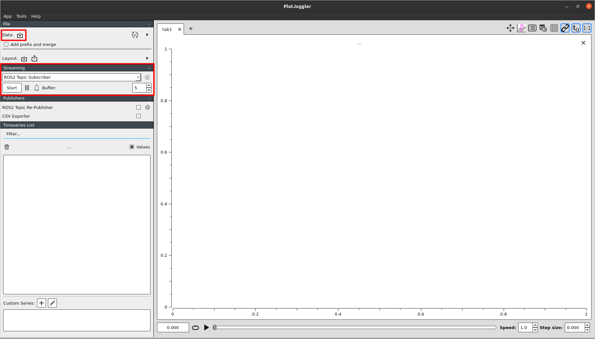
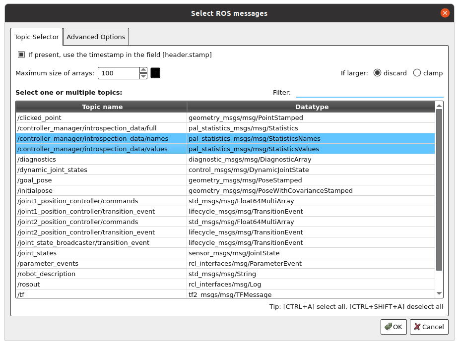
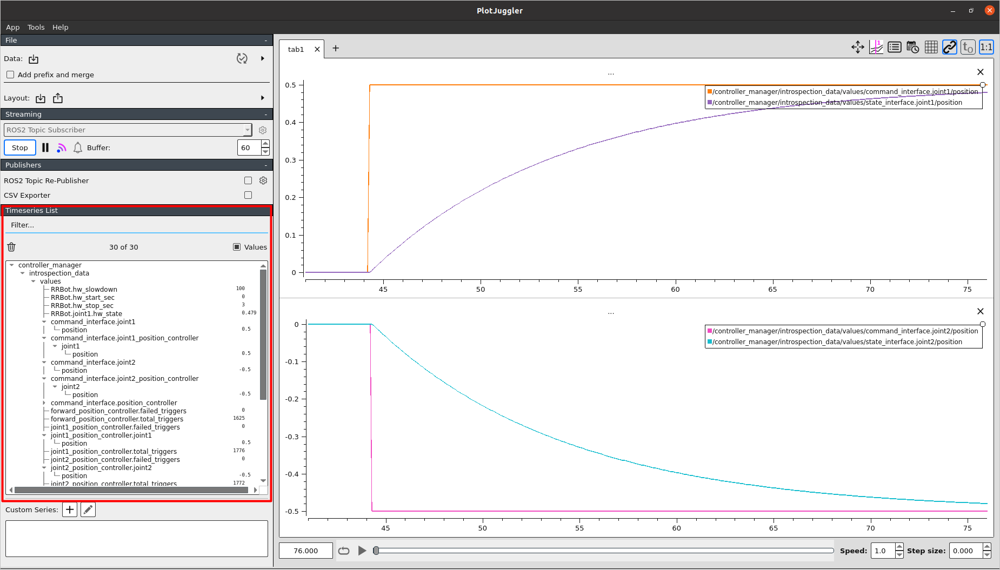

Introspection of the ros2_control setup
With the integration of the pal_statistics package, the controller_manager node publishes the registered variables within the same process to the ~/introspection_data topics.
By default, all State and Command interfaces in the controller_manager are registered when they are added, and are unregistered when they are removed from the ResourceManager.
The state of the all the registered entities are published at the end of every update cycle of the controller_manager. For instance, In a complete synchronous ros2_control setup (with synchronous controllers and hardware components), this data in the Command interface is the command used by the hardware components to command the hardware.
All the registered variables are published over 3 topics: ~/introspection_data/full, ~/introspection_data/names, and ~/introspection_data/values.
- The ~/introspection_data/full topic publishes the full introspection data along with names and values in a single message. This can be useful to track or view variables and information from command line.
- The ~/introspection_data/names topic publishes the names of the registered variables. This topic contains the names of the variables registered. This is only published every time a a variables is registered and unregistered.
- The ~/introspection_data/values topic publishes the values of the registered variables. This topic contains the values of the variables registered.
The topics ~/introspection_data/full and ~/introspection_data/values are always published on every update cycle asynchronously, provided that there is at least one subscriber to these topics.
The topic ~/introspection_data/full can be used to integrate with your custom visualization tools or to track the variables from the command line. The topic ~/introspection_data/names and ~/introspection_data/values are to be used for visualization tools like PlotJuggler or RQT plot to visualize the data.
Note
If you have a high frequency of data, it is recommended to use the ~/introspection_data/names and ~/introspection_data/values topic. So, that the data transferred and stored is minimized.
How to introspect internal variables of controllers and hardware components
Any member variable of a controller or hardware component can be registered for the introspection. It is very important that the lifetime of this variable exists as long as the controller or hardware component is available.
Note
If a variable’s lifetime is not properly managed, it may be attempted to read, which in the worst case scenario will cause a segmentation fault.
How to register a variable for introspection
Include the necessary headers in the controller or hardware component header file.
#include <hardware_interface/introspection.hpp>
Register the variable in the configure method of the controller or hardware component.
void MyController::on_configure() { ... // Register the variable for introspection (disabled by default) // The variable is introspected only when the controller is active and // then deactivated when the controller is deactivated. REGISTER_ROS2_CONTROL_INTROSPECTION("my_variable_name", &my_variable_); ... }
By default, the introspection of all the registered variables of the controllers and the hardware components is only activated, when they are active and it is deactivated when the controller or hardware component is deactivated.
Note
If you want to keep the introspection active even when the controller or hardware component is not active, you can do that by calling
this->enable_introspection(true)in theon_configureandon_deactivatemethod of the controller or hardware component after registering the variables.
Types of entities that can be introspected
Any variable that can be cast to a double is suitable for registration.
A function that returns a value that can be cast to a double is also suitable for registration.
Variables of complex structures can be registered by having defined introspection for their every internal variable.
Introspection of custom types can be done by defining a custom introspection function.
Note
Registering the variables for introspection is not real-time safe. It is recommended to register the variables in the
on_configuremethod only.
Data Visualization
Data can be visualized with any tools that display ROS topics, but we recommend PlotJuggler for viewing high resolution live data, or data in bags.
Open
PlotJugglerby runningros2 run plotjuggler plotjugglerfrom the command line.
Visualize the data by importing from the ros2bag file or subscribing to the ROS2 topics live with the
ROS2 Topic Subscriberoption underStreamingheader.Choose the topics
~/introspection_data/namesand~/introspection_data/valuesfrom the popup window.
Then, select the variables that are of your interest and drag them to the plot.
